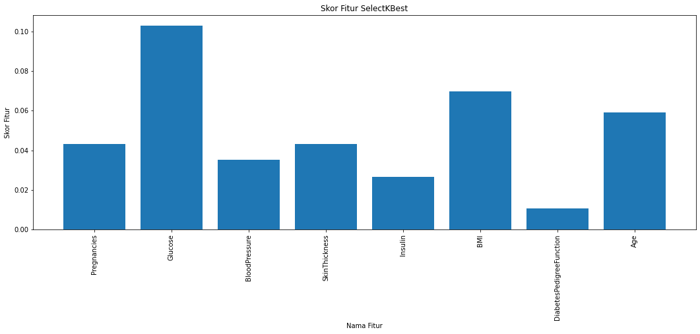
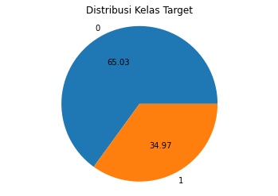
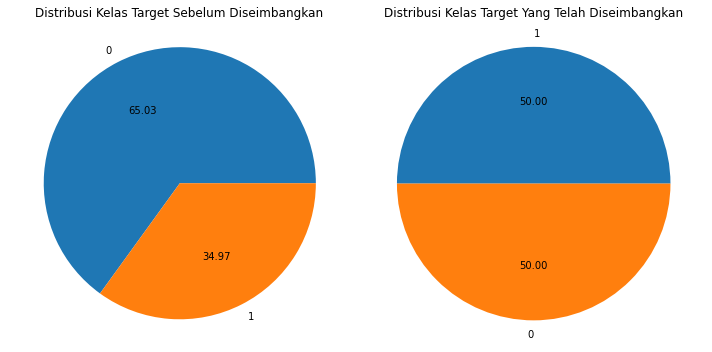
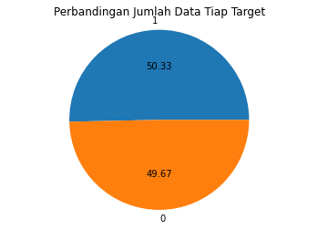
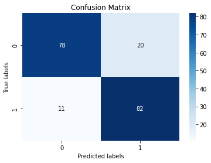

Membangun model klasifikasi diabetes terbaik sebagai upaya deteksi dini terhadap penyakit diabetes menggunakan Model Random Forest. Dengan menganalisa kumpulan data kasus diabetes, model ini akan mempelajari pola agar dapat membangun prediksi yang akurat sehingga memungkinkan tenaga kesehatan profesional untuk mengidentifikasi pasien diabetes.
1.2 DATA UNDERSTANDING
Tahap Data Understanding merupakan tahap dimana kita perlu memahami data yang akan diolah. Adapun hal - hal yang perlu dilakukan nantinya untuk memahami dataset ini, yakni
Tentang data, mencakup :
Pengumpulan dataset
Pengenalan singkat mengenai data yang akan diolah
Mendeskripsikan data, mencakup :
Analisa tipe data
Deskripsi fitur
Eksplorasi data, mencakup :
Visualisasi data
Skoring fitur
Identifikasi kualitas data :
Identifikasi missing valye setiap fitur atau kolom
Identifikasi data duplikat
Identifikasi outlier (data aneh)
Identifikasi jumlah data (proporsi data perkelas -untuk mengetahui balancing dataset atau keseimbangan data per kelas)
1.2.1About Data
1.2.1.1Pengumpulan Dataset
Kumpulan data ini berasal dari Institut Nasional Diabetes dan Penyakit Pencernaan dan Ginjal. Tujuannya adalah untuk memprediksi berdasarkan pengukuran diagnostik apakah seorang pasien menderita diabetes. Secara khusus, semua pasien di sini adalah wanita berusia minimal 21 tahun keturunan India Pima.
import pandas as pddata = pd.read_csv('diabetes.csv')data.head(5)
Pregnancies
Glucose
BloodPressure
SkinThickness
Insulin
BMI
DiabetesPedigreeFunction
Age
Outcome
0
6
148
72
35
0
33.6
0.627
50
1
1
1
85
66
29
0
26.6
0.351
31
0
2
8
183
64
0
0
23.3
0.672
32
1
3
1
89
66
23
94
28.1
0.167
21
0
4
0
137
40
35
168
43.1
2.288
33
1
1.2.1.2Seputar dataset
print("Banyaknya data : ", data.shape[0])
Banyaknya data : 768
1.2.1.3Ciri yang tersedia sebagai acuan dalam mengklasifikasi diabetes
print("Banyaknya kolom : ", data.shape[1])
Banyaknya kolom : 9
Untuk mendeteksi diabetes masyarakat Amerika, dapat dilihat dari ciri-ciri sebagai berikut :
Pregnancies: Variabel ini mengacu pada jumlah kehamilan yang dialami oleh seseorang.
Glucose : Ini adalah konsentrasi glukosa dalam plasma darah setelah tes toleransi glukosa oral selama 2 jam. Tes ini mengukur seberapa efektif tubuh dalam memproses glukosa dan dapat memberikan petunjuk apakah seseorang memiliki risiko diabetes atau masalah metabolisme glukosa lainnya.
BloodPreessure : Ini adalah tekanan darah diastolik, yaitu tekanan pada pembuluh darah ketika jantung sedang beristirahat di antara kontraksi.
SkinThickness: Ketebalan lipatan kulit trisep (dalam milimeter) sering digunakan sebagai indikator komposisi tubuh atau kadar lemak.
Insulin : Kadar insulin dalam serum setelah tes 2 jam. Insulin adalah hormon yang diproduksi oleh pankreas yang memainkan peran penting dalam mengatur kadar glukosa darah. Kadar insulin yang rendah atau resistensi insulin dapat menjadi indikator risiko diabetes.
BMI (Body Mass Index) : Ini adalah ukuran standar yang menggunakan berat badan dan tinggi badan seseorang untuk menilai apakah seseorang memiliki berat badan yang sehat atau tidak.
\[ BMI = \frac{berat badan (kg)}{tinggi badan (m^2)} \]
DiabetesPedigreeFunction: Ini mungkin merujuk pada riwayat keluarga terkait diabetes. Kecenderungan genetik dalam keluarga dapat mempengaruhi risiko seseorang terhadap diabetes.
Age : Ini adalah usia seseorang dalam tahun.
Outcome : Variabel kelas yang mungkin merepresentasikan apakah seseorang didiagnosis memiliki diabetes (1) atau tidak (0) berdasarkan berbagai faktor yang diukur atau dipelajari dalam dataset atau studi tertentu.
Dalam analisa data, terdapat beberapa tipe data yang sering ditemukan. Pemahaman tipe data ini penting karena berbagai jenis analisis statistik dan pemrosesan data dapat memerlukan pendekatan yang berbeda tergantung pada jenis data yang digunakan. Misalnya, untuk data ordinal, metode pengurutan dan perbandingan tingkat mungkin lebih tepat daripada untuk data nominal. Sedangkan untuk data interval dan rasio, operasi matematika seperti penambahan, pengurangan, dan perbandingan proporsi bisa diterapkan
Berikut Macam - Macam Data yang ada pada data ini.
Tipe nominal adalah kategori di mana data tidak memiliki urutan atau tingkatan tertentu.
memiliki value 1 yang melambangkan ya dan 0 yang melambangkan tidak. > Pada data ini mencakup fitur : ‘Outcome’
Tipe interval > yakni pada fitur ‘Pregnancies’, ‘Glucose’, ‘BloodPressure’, ‘SkinThickness’, ‘Insulin’, ‘BMI’, ‘DiabetesPedigreeFunction’, ‘Age’
1.2.2.2Deskripsi Fitur
Pregnancies: Variabel ini mengacu pada jumlah kehamilan yang dialami oleh seseorang.
Glucose : Ini adalah konsentrasi glukosa dalam plasma darah setelah tes toleransi glukosa oral selama 2 jam. Tes ini mengukur seberapa efektif tubuh dalam memproses glukosa dan dapat memberikan petunjuk apakah seseorang memiliki risiko diabetes atau masalah metabolisme glukosa lainnya.
BloodPreessure : Ini adalah tekanan darah diastolik, yaitu tekanan pada pembuluh darah ketika jantung sedang beristirahat di antara kontraksi.
SkinThickness: Ketebalan lipatan kulit trisep (dalam milimeter) sering digunakan sebagai indikator komposisi tubuh atau kadar lemak.
Insulin : Kadar insulin dalam serum setelah tes 2 jam. Insulin adalah hormon yang diproduksi oleh pankreas yang memainkan peran penting dalam mengatur kadar glukosa darah. Kadar insulin yang rendah atau resistensi insulin dapat menjadi indikator risiko diabetes.
BMI (Body Mass Index) : Ini adalah ukuran standar yang menggunakan berat badan dan tinggi badan seseorang untuk menilai apakah seseorang memiliki berat badan yang sehat atau tidak.
DiabetesPedigreeFunction: Ini mungkin merujuk pada riwayat keluarga terkait diabetes. Kecenderungan genetik dalam keluarga dapat mempengaruhi risiko seseorang terhadap diabetes.
Age : Ini adalah usia seseorang dalam tahun.
Outcome : Variabel kelas yang mungkin merepresentasikan apakah seseorang didiagnosis memiliki diabetes (1) atau tidak (0) berdasarkan berbagai faktor yang diukur atau dipelajari dalam dataset atau studi tertentu. >1 : Diabetes >0 : NonDiabetes
1.2.3Eksplorasi Data
1.2.3.1Visualisasi Data
Visualisasi data dilakukan untuk memudahkan kita memahami data. Melalui visualisasi data pula kita akan memperoleh informasi sebaran nilai dari dataset ini
import matplotlib.pyplot as pltdata.hist(figsize=(14,14))plt.show
Dengan melakukan skoring fitur, kita akan mengetahui yang mana fitur yang penting dan yang tidak. Hal ini dikarenakan tidak semua fitur dapat dijadikan ciri untuk melakukan klasifikasi. Dengan menentukan beberapa ciri terbaik akan menghasilkan akurasi yang sama atau lebih baik dibandingkan dengan menggunakan semua ciri serta menghemat waktu komputasi.
Skor informasi menggunakan mutual_info_classif berguna untuk mengevaluasi seberapa informatif suatu fitur terhadap variabel target. Skoring fitur menggunakan mutual_info_classif dapat mengukur seberapa banyak informasi dari variabel independen (fitur) yang terdapat pada variabel dependen (target) dalam dataset. Secara spesifik, skor ini menunjukkan seberapa banyak informasi dari suatu fitur yang dapat membantu dalam memprediksi target. Semakin tinggi skornya, semakin informatif fitur tersebut terhadap variabel target.
from sklearn.feature_selection import SelectKBest, mutual_info_classif# memisahkan kolom fitur dan targetfitur = data.drop(columns=['Outcome'], axis =1)target = data['Outcome']# Buat objek SelectKBest dengan mutual_info_classif sebagai fungsi skork_best = SelectKBest(score_func=mutual_info_classif, k='all') # 'all' berarti akan mempertahankan semua fitur# Hitung skor fiturk_best.fit(fitur, target)scores = k_best.scores_# Dapatkan nama fitur dari kolom data Andafitur_names = fitur.columns# Tampilkan skor fitur berserta namanyafor i, (score, fitur_name) inenumerate(zip(scores, fitur_names)):print(f"Fitur {i}: {fitur_name}, Skor: {score}")
import matplotlib.pyplot as plt# Tampilkan skor fitur dalam grafikplt.figure(figsize=(18, 6))plt.bar(fitur_names, scores)plt.xlabel("Nama Fitur")plt.ylabel("Skor Fitur")plt.title("Skor Fitur SelectKBest")plt.xticks(rotation=90)plt.show()

1.2.4Mengidentifikasi Kualitas Data ——————————————————————————————————–
1.2.4.1Identifikasi missing value
Missing Value adalah hilangnya satu atau beberapa data dalam suatu atribut. Berikut penyebab umum dari adanya missing value. 1. Kesalahan manusia saat memasukkan data, contohnya penyalinan data yang tidak lengkap atau salah pengetikan 2. Terdapat beberapa pertanyaan tidak diisi oleh responden 3. Ketika data dihapus dan tidak diunduh dengan benar dari sumbernya 4. serta Tidak semua atribut sesuai dengan semua narasumber, contohnya atribut pendapat yang tidak relevan untuk siswa yang tidak bekerja
Penanganan Missing Value : Jika atribut tersebut memiliki banyak missing value, maka atribut tersebut perlu dihapus dari dataset. Namun jika hanya terdapat beberapa data yang missing value bisa dilakukan drop dari baris yang memiliki missing value atau mengisinya dengan rata - rata nilai pada atribut yang bersangkutan.
Contoh adanya missing value :
fitur1
fitur2
fitur3
1
10
5
12
5
14
5
2
16
5
18
20
5
Dari tabel di atas fitur 1 memiliki banyak sekali missing value sehingga atribut fitur 1 perlu dihilangkan dan bisa dianggap tidak mencirikan data.
Untuk melakukan pengecekan missing value, maka digunakan fungsi isna()
# mengecek apakah ada nilai yang hilang dalam setiap kolommissing_values = data.isna().any()# menampilkan hasilprint("Apakah ada nilai yang hilang dalam setiap kolom:")print(missing_values)
Apakah ada nilai yang hilang dalam setiap kolom:
Pregnancies False
Glucose False
BloodPressure False
SkinThickness False
Insulin False
BMI False
DiabetesPedigreeFunction False
Age False
Outcome False
dtype: bool
Noted : tidak ada missing value pada data
1.2.4.2Identifikasi Duplikat Data
Duplikat data merupakan suatu kondisi dimana suatu baris memiliki nilai yang sama persis di semua kolom pada baris lainnya. Adanya data yang redundan (berulang) dapat mengganggu hasil analisis dan menghasilkan akurasi yang tidak akurat. Untuk mengecek adanya duplikat data, maka digunakan fungsi dupicated()
jumlah_duplikat = data.duplicated().sum()print("Jumlah data yang duplikat:", jumlah_duplikat)
Jumlah data yang duplikat: 0
Note : tidak ada data yang redundan pada data.
1.2.4.3Identifikasi Outlier
Outlier adalah nilai yang jauh berbeda dari nilai lainnya dalam kumpulan data. Istilah outlier juga sering dikenal dengan nilai ekstrem serta tidak mencerminkan fenomena yang sebenarnya.
Contoh :
Di suatu sekolah A, biaya SPP ditetapkan berdasarkan gaji rata - rata orang tua masing - masing murid. Berikut rincian data yang diperoleh.
Nama
Penghasilan Orang Tua
siswa 1
Rp. 500.000
siswa 2
Rp. 750.000
siswa 3
Rp. 500.000
siswa 4
Rp. 450.000
siswa 5
Rp. 5.000.000
Dari data tersebut ditemukan satu outlier yakni pada data siswa 5 yang mana penghasilan orangtuanya bisa mencapai Rp.5.000.000 per bulan. Jika penetapan biaya SPP tidak memperharikan outlier maka tiap siswa perlu membayar spp sebesar Rp. 1.440.000 yang tentu saja akan memberatkan semua siswa selain siswa 5.
Untuk mengidentidikasi outlier, maka digunakan modul LOF (LocalOutlierFactor). LOF dipilih karena modul ini memungkinkan untuk menemukan titik-titik yang relatif jauh dari sebagian besar data lainnya, yang kemudian dianggap sebagai outlier.
from sklearn.neighbors import LocalOutlierFactor# Menggunakan Local Outlier Factorlof = LocalOutlierFactor(n_neighbors=5)outlier_scores = lof.fit_predict(data)outliers = data[outlier_scores ==-1]print("Banyaknya outlier : ", outliers.shape[0])data_bersih = data[outlier_scores !=-1]print("Sisa data : ", data_bersih.shape[0])
Banyaknya outlier : 36
Sisa data : 732
Note : sebanyak 4% data adalah outlier
1.2.4.4Identifikasi Jumlah Data
Dengan mengetahui proporsi data untuk masing - masing label, kita bisa mengetahui seberapa berbeda jumlah data di tiap - tiap label. Jika jumlah data antar label memiliki perbedaan yang sangat jauh maka akan mempengaruhi akurasi serta hasil klasifikasi sehingga nantinya perlu dilakukan penyeimbangan jumlah data di tiap labelnya.
dataa = data['Outcome'].value_counts()print("Jumlah data pada tiap target :")print(dataa)
Jumlah data pada tiap target :
0 500
1 268
Name: Outcome, dtype: int64
Dataset ini memiliki 768 data dengan rincian pelabelan sebagai berikut :
Label
Meaning
Total
0.0
Tidak Diabetes
500 data
1.0
Prediabetes
268 data
Note : terjadi ketimpangan data yang signifikan sehingga perlu dilakukan balancing data agar proporsi data tidak condong hanya pada satu atau kelas lainnya
1.2.5Hasil Analisa Pada Data Understanding :
Data tidak memiliki missing values
Data tidak ada yang terduplikat
Data memiliki 4% outlier
Perbedaan jumlah atau proporsi data antar label sangat jauh
Hasil skoring fitur masih menggunakan data kotor sehingga perlu difilter kembali
1.3 DATA PREPROCESSING
Setelah memahami data, akan dilakukan tahap preprocessing untuk menangani masalah pada data yang sudah didefinisikan pada data understanding, yakni. 1. Menghapus Outlier 2. Menyeimbangkan proporsi data tiap target
Setelah data siap, akan dilakukan skoring fitur kembali.
import pandas as pddata = pd.read_csv('diabetes.csv')data.head(5)
Pregnancies
Glucose
BloodPressure
SkinThickness
Insulin
BMI
DiabetesPedigreeFunction
Age
Outcome
0
6
148
72
35
0
33.6
0.627
50
1
1
1
85
66
29
0
26.6
0.351
31
0
2
8
183
64
0
0
23.3
0.672
32
1
3
1
89
66
23
94
28.1
0.167
21
0
4
0
137
40
35
168
43.1
2.288
33
1
# Rincian dataset (banyak data dan kolom)print("Banyaknya data : ", data.shape[0])print("Banyaknya kolom : ", data.shape[1])
Banyaknya data : 768
Banyaknya kolom : 9
1.3.1Menghapus Outlier
Outlier adalah nilai yang jauh berbeda dari nilai lainnya dalam kumpulan data. Istilah outlier juga sering dikenal dengan nilai ekstrem serta tidak mencerminkan fenomena yang sebenarnya.
Contoh :
Di suatu sekolah A, biaya SPP ditetapkan berdasarkan gaji rata - rata orang tua masing - masing murid. Berikut rincian data yang diperoleh.
Nama
Penghasilan Orang Tua
siswa 1
Rp. 500.000
siswa 2
Rp. 750.000
siswa 3
Rp. 500.000
siswa 4
Rp. 450.000
siswa 5
Rp. 5.000.000
Dari data tersebut ditemukan satu outlier yakni pada data siswa 5 yang mana penghasilan orangtuanya bisa mencapai Rp.5.000.000 per bulan. Jika penetapan biaya SPP tidak memperharikan outlier maka tiap siswa perlu membayar spp sebesar Rp. 1.440.000 yang tentu saja akan memberatkan semua siswa selain siswa 5. Oleh karena itu, data yang memiliki outlier harus dikeluarkan dari dataset
from sklearn.neighbors import LocalOutlierFactor# Menggunakan Local Outlier Factorlof = LocalOutlierFactor(n_neighbors=5)outlier_scores = lof.fit_predict(data)data_oke = data[outlier_scores !=-1]print("Sisa data : ", data_oke.shape[0])
Sisa data : 732
1.3.2Menyeimbangkan Data Tiap Target
Dengan mengetahui proporsi data untuk masing - masing label, kita bisa mengetahui seberapa berbeda jumlah data di tiap - tiap label. Jika jumlah data antar label memiliki perbedaan yang sangat jauh maka akan mempengaruhi akurasi serta hasil klasifikasi sehingga nantinya perlu dilakukan penyeimbangan jumlah data di tiap labelnya.
import matplotlib.pyplot as pltvalue_counts = target.value_counts()plt.pie(value_counts, labels=value_counts.index, autopct='%.2f')plt.title('Distribusi Kelas Target')plt.axis('equal')plt.show()

1.3.2.2Penyeimbangan jumlah atau proporsi data
Perbandingan proporsi data tiap target lumayan jauh yakni 6.5 : 3,5 dan akan diseimbangkan menggunakan metode SMOTE. SMOTE (Synthetic Minority Over-sampling Technique) adalah teknik oversampling yang digunakan dalam pengolahan data yang tidak seimbang (imbalanced data) di mana kelas minoritas (minority class) dalam dataset memiliki frekuensi yang jauh lebih rendah dibandingkan dengan kelas mayoritas (majority class).
from imblearn.over_sampling import SMOTEsmote = SMOTE()fitur_seimbang, target_seimbang = smote.fit_resample(fitur, target)print("Jumlah sampel setelah diseimbangkan : ")print(target_seimbang.value_counts())
Jumlah sampel setelah diseimbangkan :
1 476
0 476
Name: Outcome, dtype: int64
1.3.2.2.1Visualisasi banyaknya data di tiap label
import matplotlib.pyplot as pltfig, axs = plt.subplots(1, 2, figsize=(10, 5))# Plot distribusi kelas target sebelum penyeimbangantarget_tidak_seimbang = target.value_counts()axs[0].pie(target_tidak_seimbang, labels=target_tidak_seimbang.index, autopct='%.2f')axs[0].set_title('Distribusi Kelas Target Sebelum Diseimbangkan')axs[0].axis('equal')# Plot distribusi kelas target setelah penyeimbangantarget_sudah_seimbang = target_seimbang.value_counts()axs[1].pie(target_sudah_seimbang, labels=target_sudah_seimbang.index, autopct='%.2f')axs[1].set_title('Distribusi Kelas Target Yang Telah Diseimbangkan')axs[1].axis('equal')plt.tight_layout()plt.show()

1.3.3Hasil Preprocessing Data
simpan data yang telah siap diproses pada file csv baru
import pandas as pd# Membuat DataFrame dari fitur dan target yang telah seimbangdata_seimbang = pd.concat([fitur_seimbang, target_seimbang], axis=1)# Menyimpan DataFrame ke dalam file CSVdata_seimbang.to_csv('data_seimbang.csv', index=False)
1.3.4Feature Selection
Dengan melakukan skoring fitur, kita akan mengetahui yang mana fitur yang penting dan yang tidak. Hal ini dikarenakan tidak semua fitur dapat dijadikan ciri untuk melakukan klasifikasi. Dengan menentukan beberapa ciri terbaik akan menghasilkan akurasi yang sama atau lebih baik dibandingkan dengan menggunakan semua ciri serta menghemat waktu komputasi.
Skor informasi menggunakan mutual_info_classif berguna untuk mengevaluasi seberapa informatif suatu fitur terhadap variabel target. Skoring fitur menggunakan mutual_info_classif dapat mengukur seberapa banyak informasi dari variabel independen (fitur) yang terdapat pada variabel dependen (target) dalam dataset. Secara spesifik, skor ini menunjukkan seberapa banyak informasi dari suatu fitur yang dapat membantu dalam memprediksi target. Semakin tinggi skornya, semakin informatif fitur tersebut terhadap variabel target.
from sklearn.feature_selection import SelectKBest, mutual_info_classif# Buat objek SelectKBest dengan mutual_info_classif sebagai fungsi skork_best = SelectKBest(score_func=mutual_info_classif, k='all') # 'all' berarti akan mempertahankan semua fitur# Hitung skor fiturk_best.fit(fitur_seimbang, target_seimbang)scores = k_best.scores_# Dapatkan nama fitur dari kolom data Andafitur_names = fitur.columns# Tampilkan skor fitur berserta namanyafor i, (score, fitur_name) inenumerate(zip(scores, fitur_names)):print(f"Fitur {i}: {fitur_name}, Skor: {score}")
import pandas as pddataset = pd.read_csv('dataset_baru.csv')dataset.head(5)
Glucose
BloodPressure
Insulin
BMI
Age
Outcome
0
148
72
0
33.6
50
1
1
85
66
0
26.6
31
0
2
183
64
0
23.3
32
1
3
89
66
94
28.1
21
0
4
137
40
168
43.1
33
1
print("Banyaknya data : ", dataset.shape[0])print("Banyaknya kolom : ", dataset.shape[1])
Banyaknya data : 952
Banyaknya kolom : 6
1.4.2Split Dataset
from sklearn.model_selection import train_test_split# memisahkan kolom fitur dan targetfitur = dataset.drop(columns=['Outcome'], axis =1)target = dataset['Outcome']# melakukan pembagian dataset, dataset dibagi menjadi 80% data training dan 20% data testingfitur_train, fitur_test, target_train, target_test = train_test_split(fitur, target, test_size =0.2, random_state=42)
print("Banyaknya fitur atau ciri yang digunakan : ", fitur_train.shape[1])print("Banyaknya data latih : ", fitur_train.shape[0])print("Banyaknya data testing : ", fitur_test.shape[0])
Banyaknya fitur atau ciri yang digunakan : 5
Banyaknya data latih : 761
Banyaknya data testing : 191
target_train.value_counts()
1 383
0 378
Name: Outcome, dtype: int64
import matplotlib.pyplot as pltvalue_counts = target_train.value_counts()plt.pie(value_counts, labels=value_counts.index, autopct='%.2f')plt.title('Perbandingan Jumlah Data Tiap Target')plt.axis('equal')plt.show()

1.4.3Normalisasi Data
Normalisasi data adalah proses pengubahan skala dari fitur-fitur dalam dataset sehingga setiap fitur memiliki rentang nilai yang seragam. Normalisasi data bertujuan untuk menghindari kesenjangan besar antara nilai-nilai berbeda dalam dataset serta memungkinkan model pembelajaran mesin untuk bekerja lebih baik.
Z-score normalization merupakan salah satu metode normalisasi yang mana mengubah nilai fitur ke dalam distribusi normal dengan rata-rata 0 dan standar deviasi 1. Rumusnya adalah :
\[ Z = \frac{(X−μ)}{σ} \]
Keterangan :
* Z adalah nilai yang telah dinormalisasikan
* X adalah nilai asli fitur
* μ adalah rata-rata
* σ adalah standar deviasi dari fitur
Rumus untuk standar deviasi sendiri sebagai berikut. \[ s = \sqrt{\frac{\sum_{i=1}^{n}(x_i - \bar{x})^2}{n - 1}} \]
Contoh, disediakan data sebagai berikut. Tentukan nilai hasil normalisasinya
X
10
20
30
40
50
Z
?
?
?
?
?
Diketahui :
rata - rata \[ μ = \sqrt{\frac{\sum_{i=1}^{n}(x_i)}{n}} \]
import picklefrom sklearn.preprocessing import StandardScaler# menentukan lokasi file pickle akan disimpanpath ='zscorescaler.pkl'# membuat dan melatih objek StandardScalerzscore_scaler = StandardScaler()zscore_scaler.fit(fitur_train)# menyimpan model ke dalam file picklewithopen(path, 'wb') asfile: pickle.dump(zscore_scaler, file)# memanggil kembali model normalisasi zscore dari file picklewithopen(path, 'rb') asfile: zscore_scaler = pickle.load(file)# menerapkan normalisasi zscore pada data trainingzscore_training = zscore_scaler.transform(fitur_train)# menerapkan normalisasi zscore pada data testingzscore_testing = zscore_scaler.transform(fitur_test)
zscore_scaler
StandardScaler()
In a Jupyter environment, please rerun this cell to show the HTML representation or trust the notebook. On GitHub, the HTML representation is unable to render, please try loading this page with nbviewer.org.
StandardScaler()
1.4.4Membuat model
1.4.4.1Konsep Random Forest
Random Forest adalah algoritma pembelajaran terawasi yang digunakan untuk tugas klasifikasi dan regresi dalam machine learning. Ini merupakan bagian dari keluarga algoritma yang dikenal sebagai ensemble learning, yang menggabungkan hasil beberapa model untuk meningkatkan kinerja dan ketepatan prediksi.
Konsep inti dari Random Forest adalah membuat sejumlah besar pohon keputusan saat melakukan prediksi. Setiap pohon keputusan dibuat berdasarkan sampel acak dari data pelatihan dan fitur yang dipilih secara acak. Proses ini mengurangi risiko overfitting (memfitting data pelatihan secara berlebihan) yang sering terjadi pada pohon keputusan tunggal.
Selama proses pelatihan, setiap pohon keputusan dalam hutan acak memilih subset data yang diambil secara acak dan subset fitur untuk membuat keputusan. Ketika melakukan prediksi, setiap pohon memberikan hasilnya, dan hasil akhir dari Random Forest diperoleh dengan mengambil mayoritas suara dari semua pohon keputusan (untuk klasifikasi) atau rerata hasil (untuk regresi).
Kelebihan dari Random Forest termasuk kemampuannya dalam menangani data yang besar dengan fitur yang banyak, serta kemampuan untuk mengatasi overfitting. Namun, seperti halnya dengan banyak algoritma machine learning, pengaturan parameter yang tidak tepat atau kekurangan pemrosesan data yang tepat dapat mempengaruhi kinerja Random Forest.
1.4.4.2Prinsip kerja utama algoritma Random Forest
Pemilihan Sampel Acak (Random Sampling):
Dari dataset yang ada, Random Forest melakukan sampling acak dengan penggantian (bootstrap sampling) untuk membuat dataset yang lebih kecil namun representatif. Hal ini membantu dalam membangun berbagai pohon keputusan yang berbeda. Dengan kata lain, dari dataset yang ada, dilakukan secara acak pemilihan sampel data sebanyak dataset awal (tetapi dengan pengembalian, sehingga beberapa data mungkin terpilih lebih dari sekali dan beberapa tidak terpilih sama sekali).
Pembangunan Pohon Keputusan (Decision Tree):
Setiap pohon keputusan dibangun menggunakan subset dari data yang diambil secara acak pada langkah pertama. Pohon-pohon ini dibuat dengan membagi data berulang-ulang berdasarkan fitur-fitur yang tersedia, untuk membuat keputusan yang optimal pada setiap simpulnya.
Pemilihan Fitur Secara Acak
Saat proses pembagian node pada setiap pohon keputusan dengan memilih fitur terbaik dapat dengan menggunakan Gini Index untuk mengukur keberagaman kelas dalam sebuah himpunan data. Dalam setiap pemilihan split (pemilihan fitur yang digunakan untuk membagi node), hanya sebagian kecil fitur yang dipertimbangkan untuk digunakan. Biasanya, ini dilakukan dengan cara memilih sejumlah kecil fitur secara acak dari total fitur yang tersedia untuk digunakan pada setiap pemilihan split. Rumus Gini Index :
\[ Gini Index = 1 - Σ (pi^2) \]
dimana : - pi adalah proporsi dari setiap kelas terhadap keseluruhan data di node. - Σ menunjukkan penjumlahan untuk setiap kelas yang berbeda pada node tersebut.
Voting atau Penggabungan (Voting or Aggregation):
Setelah semua pohon keputusan selesai dibuat, hasil prediksi dari setiap pohon dikumpulkan. Pada tahap ini, jika masalahnya adalah klasifikasi, hasilnya diambil dengan cara mayoritas (melalui voting), sedangkan untuk regresi, hasilnya bisa diambil dengan rata-rata dari prediksi semua pohon.
Pengukuran Keakuratan (Accuracy Measurement): Untuk menentukan hasil akhir, model menghasilkan prediksi berdasarkan mayoritas suara dari semua pohon keputusan (untuk klasifikasi) atau nilai rata-rata (untuk regresi). Keakuratan model kemudian diukur dengan membandingkan prediksi tersebut dengan nilai sebenarnya dari data yang tidak terlibat dalam pelatihan.
1.4.4.3Pencarian Parameter Terbaik
Pencarian parameter terbaik menggunakan modul GridSearchCVAdapun parameter yang akan diuji yakni.
n_estimators yakni jumlah pohon yang ingin dibangun. Semakin banyak pohon, biasanya hasilnya akan lebih baik, namun akan memakan lebih banyak waktu komputasi.
max_depth yakni kedalaman maksimum dari setiap pohon keputusan dalam ensemble. Kedalaman yang terlalu dalam dapat menyebabkan overfitting.
Min_samples_split dan min_samples_leaf yakni jumlah sampel minimum yang diperlukan untuk membagi node internal atau menjadi daun (leaf node) dalam pohon.
from sklearn.model_selection import GridSearchCVfrom sklearn.ensemble import RandomForestClassifierparam_grid = {'n_estimators': [100, 300, 500], 'max_depth': [None, 10, 30, 50],'min_samples_split': [2, 5, 10],'min_samples_leaf': [1, 2, 4]}# Inisialisasi model Random Forestrf = RandomForestClassifier()# Buat objek Grid Search dengan model Random Forest dan parameter gridgrid_search = GridSearchCV(estimator=rf, param_grid=param_grid, cv=5, n_jobs=-1, verbose=2)# Lakukan grid search pada data latihgrid_search.fit(zscore_training, target_train)# Melihat parameter terbaik yang ditemukanprint("Parameter terbaik:", grid_search.best_params_)# Evaluasi model terbaik pada data ujibest_model = grid_search.best_estimator_accuracy = best_model.score(zscore_testing, target_test)print("\nAkurasi model terbaik:", accuracy)
Fitting 5 folds for each of 108 candidates, totalling 540 fits
Parameter terbaik: {'max_depth': None, 'min_samples_leaf': 1, 'min_samples_split': 2, 'n_estimators': 300}
Akurasi model terbaik: 0.837696335078534
1.4.4.4Simpan Model
Model disimpan dalam format .pkl menggunakan modul pickle. Hal ini bertujuan agar jika sewaktu - waktu model ini akan digunakan kembali, cukup membuka model.pkl nya saja
import pickle# Simpan model terbaik ke dalam file picklewithopen('model_rf.pkl', 'wb') asfile: pickle.dump(best_model, file)
best_model
RandomForestClassifier(n_estimators=300)
In a Jupyter environment, please rerun this cell to show the HTML representation or trust the notebook. On GitHub, the HTML representation is unable to render, please try loading this page with nbviewer.org.
RandomForestClassifier(n_estimators=300)
1.5 EVALUATION
Tahap evaluasi merupakan tahap penilaian atas kebenaran data. Melalui tahap ini kita dapat mengetahui seberapa jauh suatu data dapat dipercaya.
Confusion matrix adalah tabel yang digunakan untuk mengevaluasi kinerja model pada data uji di mana nilai sebenarnya diketahui. Ini menampilkan jumlah hasil prediksi yang benar dan yang salah yang dibuat oleh model secara terperinci.
Confusion matrix terdiri dari empat istilah utama: 1. True Positives (TP): Prediksi positif yang benar, yaitu jumlah sampel positif yang diprediksi dengan benar oleh model. 2. True Negatives (TN): Prediksi negatif yang benar, yaitu jumlah sampel negatif yang diprediksi dengan benar oleh model. 3. False Positives (FP): Kesalahan prediksi di mana model memprediksi positif saat seharusnya negatif, yaitu jumlah sampel negatif yang salah diprediksi sebagai positif. 4. False Negatives (FN): Kesalahan prediksi di mana model memprediksi negatif saat seharusnya positif, yaitu jumlah sampel positif yang salah diprediksi sebagai negatif.
import matplotlib.pyplot as pltfrom sklearn.metrics import confusion_matriximport seaborn as snsconf_matrix = confusion_matrix(target_test, y_pred_rf)plt.figure(figsize=(6, 4))sns.heatmap(conf_matrix, annot=True, cmap='Blues', fmt='g')plt.xlabel('Predicted labels')plt.ylabel('True labels')plt.title('Confusion Matrix')plt.show()

Dari matrik di atas, diperoleh informasi sebagai berikut. * Orang yang tidak diabetes dan diprediksi benar ada 78 data * Orang diabetes dan diprediksi benar ada 82 data